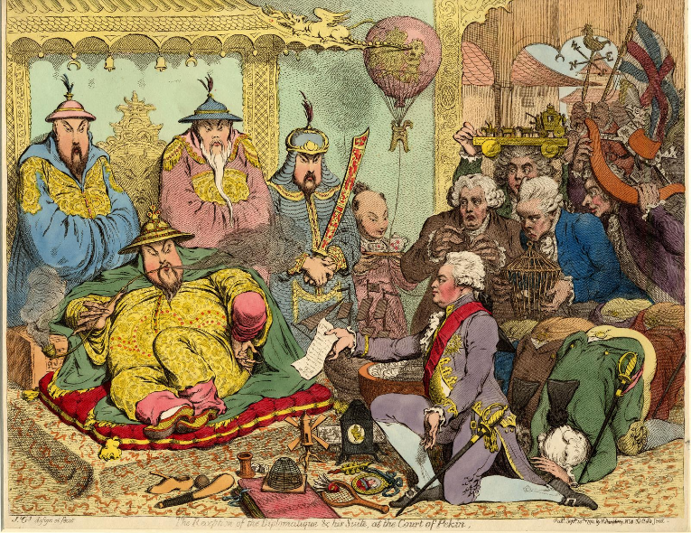
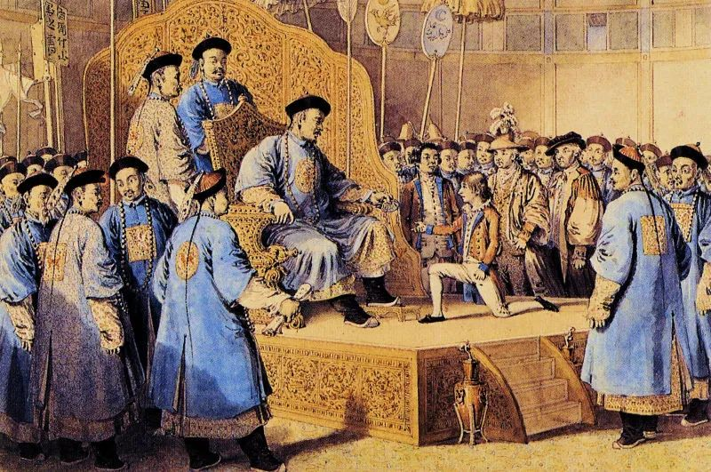
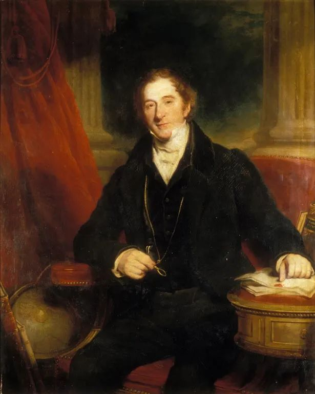
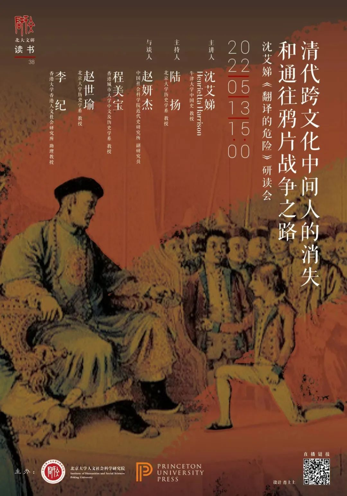

收录于合集
以下文章来源于普林斯顿读书汇 ，作者PUP China
 普林斯顿读书汇 .
普林斯顿读书汇 .
普林斯顿大学出版社 (Princeton University Press) 旗下唯一公众号。自1905年起，PUP已成为全球顶尖学术成果与思想的传播者。关注我们，获取最新英文书摘，领军学者访谈，作者讲座活动。

内容简介
人们探寻近代中国悲剧的根源时，往往会联想起乾隆帝对待英国马戛尔尼使团（Macartney Embassy）的傲慢态度，认为表征于此的“天朝”心态阻碍了中国的近代化。在新书 The Perils of Interpreting 中，牛津教授沈艾娣（Henrietta Harrison）则提出，在鸦片战争以前的中国，“傲慢无知”是在半个世纪中被人为制造出来的，而非统治者或社会文化的固有特质。
通过检视两位曾深度参与马戛尔尼使团的译员的生涯，沈艾娣追溯了18世纪末19世纪初中英间跨文化中介者（cross-cultural mediators）活跃与消亡的轨迹。沈艾娣表明，尽管熟悉西方的中国人一直存在，但日益紧张的局势使那些跨文化中介者陷入危机。清廷对英国人的“无知”并非简单固有，而是通过对跨文化中介者的压迫而人为制造的；在压制专家声音的过程中，清廷错过了一个获得洞察力的机会，而这些洞察力本可能使鸦片战争有着不同的结局。
** 会议信息**
此次会议由普林斯顿大学出版社与北京大学人文社会科学研究院联合主办。
会议主题 ： 清代跨文化中间人的消失和通往鸦片战争之路
—— 沈艾娣《翻译的危险：清朝与大英帝国两位翻译家的非凡人生》研读会
会议时间： 北京时间 **** 5月13日（星期五） 15:00-17:00
会议语言： 英语
参会方式： 点击文末“阅读原文”，或复制以下链接到浏览器
https://us02web.zoom.us/j/88528711509
也可扫描以下二维码直接进入会议室：

主讲人
沈艾娣（Henrietta Harrison）
牛津大学中国史教授，擅长将全球视野与微观史研究方法相结合，研究近代早期以来的中西交流史（特别是近代中国传教士的历史），山西地方史，1911年的革命与民族主义，20世纪儒教，天主教问题。代表作有：《传教士的诅咒》，《梦醒子：一位华北乡居者的人生（1857-1942）》和 The Perils of Interpreting: The Extraordinary Lives of Two Translators Between Qing China and the British Empire （《翻译的危险：清朝与大英帝国两位翻译家的非凡人生》）等。
主持人
陆扬
北京大学历史学系教授。主要研究领域为隋唐五代史、中国中古佛教文化史、现代史学理论。
与谈人
赵妍杰
中国社会科学院近代史研究所副研究员，专业方向为近代中国社会文化史、民国政治史。
程美宝
香港城市大学中文及历史学系教授，研究领域为近代中国社会文化史。
赵世瑜
北京大学历史学系教授、博士生导师，主要研究方向为10世纪以来的中国社会史、历史人类学及民俗学史。
李纪
香港大学香港人文社会研究所助理教授，研究方向为十八、十九世纪社会、文化、宗教史。
PUP内容速递
** 点击下图链接直达本书购买页**
** The Perils of Interpreting:** ** The Extraordinary Lives of Two Translators Between Qing China and the British Empire**
_ *点击以上图片可查看活动优惠价格_ ****
本书目录
引言
第一部 跨越世界的生活 LIVES THAT CROSSED THE WORLD 第1章 凉州李家 The Li Family of Liangzhou第2章 戈尔韦的乔治·伦纳德·斯当东 George Leonard Staunton of Galway第3章 李自标在那不勒斯接受教育Li Zibiao’s Education in Naples第4章 乔治·托马斯·斯当东的奇异童年 George Thomas Staunton’s Peculiar Childhood
第二部 李自标和马戛尔尼使团
LI ZIBIAO AND LORD MACARTNEY’S EMBASSY
第5章 为赴华使团寻找翻译
Finding an Interpreter for an Embassy to China
第6章 跨越大洋
Crossing the Oceans
第7章 其他可能的翻译者
Other Possible Interpreters
第8章 作为翻译官和中介者的李自标
Li Zibiao as Interpreter and Mediator
第9章 向皇帝翻译
Speaking to the Emperor
第10章 无形的翻译者
Becoming an Invisible Interpreter
第11章 使团离开后的李自标
Li Zibiao after the Embassy
第三部 小斯当东和广东贸易 GEORGE THOMAS STAUNTON AND THE CANTON TRADE 第12章 小斯当东成为翻译官 George Thomas Staunton Becomes an Interpreter第13章 作为译者和银行家的乔治·斯当东爵士 Sir George Staunton, Translator and Banker第14章 英国占领澳门及其后果 The British Occupation of Macao and Its Aftermath第15章 作为语言学家的麻烦 A Linguist and His Troubles第16章 亚美士德使团 The Amherst Embassy
第四部 排斥 EXCLUSION 第17章 李自标在躲藏中度过的晚年 Li Zibiao’s Last Years in Hiding第18章 议会中的斯当东 Staunton in Parliament第19章 鸦片战争 The Opium War第20章 遗忘 Forgetting
结论
“无知”从何而来？
1793年晚夏，由马戛尔尼勋爵率领的英国赴华使团在承德觐见了乾隆皇帝。19世纪初的英国人愤懑于交涉过程中围绕叩头仪礼发生的争执、乾隆对英国“先进”礼物的不屑一顾、清廷对英国要求的全盘拒绝。不仅如此，清王朝对英国所代表的现代性盲目拒斥的画面，也成后世历史学家研究这一事件的焦点。
 关于马戛尔尼觐见乾隆帝的讽刺漫画
图片来源：大英博物馆（www.britishmuseum.org/）
这一由费正清代表的经典范式以“传统秩序对近代文明”的视角把握中国与欧洲的早期往来，将马戛尔尼使团访华事件视为集中体现两种文明冲突的经典案例。在这一二分图示中，中华文明具有狭隘自我中心主义观念，而英国则代表了富有希望的近代文明——正因为18世纪末的清政府未能善待马戛尔尼使团从而主动融入新的国际秩序，半个世纪后才会在英国炮舰之下被迫开国。
如果说是鸦片战争开启了中国近代的“百年屈辱”，而统治者的“妄自尊大”“傲慢无知”是导致“屈辱”的原因，那么接下来的问题便是 为何清政府未能尽早意识到近代西洋文明的长处、觉察到欧洲殖民扩张的挑战，从而开启近代化进程？ 上述对传统与近代世界观的本质化区分正代表了现代主义范式对此问题的解答。但在西方学界对于欧洲中心主义与现代神话开始自觉批判的风潮中，美国汉学家何伟亚在名作《怀柔远人》中提出，任何试图使中国接受西方中心的近代文明的努力都没有自明的合理性。
另一方面，在马戛尔尼时代，英国的工业革命刚刚起步，象征西方“优越”的船坚炮利，对乾隆和马戛尔尼来说都不存在。研究近世欧亚交流史的德国汉学家奥斯特哈默指出，在19世纪以前欧洲与亚洲之间在武力与经济实力上仍保持着不稳的均衡，即便是欧洲人也尚未建立起对自身文明的绝对信心。因此要求乾隆皇帝预知西方未来的优势也是一种出于后见之明的苛求。
除上述时代背景与个人因素的制约以外，美国学者马修·莫斯卡还提出清帝国在国防战略上长期的内亚偏重使得政府的情报处理系统将焦点置于西北边疆，无法及时应对从南方到来的新挑战。
如果说莫斯卡关注的是清王朝在军事活动中建立起的既有情报机器，那么牛津大学教授沈艾娣在新作 The Perils of Interpreting 中所关注的则是 清政府本可以积极利用的、由译员和传教士等跨文化中介者组成的潜在知识网络 。二者从知识的搜集、处理和传播机制方面解释清王朝之“无知”这一点上有着共通之处。通过拒绝将中国对西方知识的匮乏视作本质化、常态化和妄想症式的现象，这一路径更加客观全面地揭示了影响中国近代命运的因素。
在这本 PUP 2021年秋季新书 The Perils of Interpreting 中，沈艾娣巧妙地将历史镜头转移到马戛尔尼使团的两位口译员——李自标（Jacobus Ly）和乔治·托马斯·斯当东（George Thomas Staunton，通称小斯当东）——身上，从而呈现了一幅更加细致入微的东西帝国交流的画面。书中通过梳理李自标和小斯当东的生涯、他们对经由自己运转的中英交流的影响、跨文化中介者这一身份的意味，审视了从18世纪末到19世纪初这一中英关系的关键时刻。
沈艾娣表明，尽管熟悉西方的中国人一直存在，但日益紧张的局势使那些跨文化中介者陷入危机。清廷对英国人的“无知”并非简单固有，而是通过对李和斯当东等中介者的压迫而人为制造的；在压制专家声音的过程中，清廷错过了一个获得洞察力的机会，而这些洞察力本可能阻止中国走向一场注定失败的战争。
点击下图直达本书购买页
**活动价：248 原价：298 ******
跨文化中介者的活跃与消失
当接见马戛尔尼使团时，自豪于能驱使蒙语、藏语和维吾尔语接见贡使的乾隆帝发现自己需要一位口译员。
行单膝跪礼的马戛尔尼说着意大利语。而他的话由一位跪在他身后的年轻人当场转译为中文。这位身着英国制服的中国年轻人名为李自标，出生在中国西北的一个天主教家庭，在十二岁时他前往那不勒斯，花了二十年时间受训成为一位天主教神父，此次随来华使团回国。乾隆帝在听完使节团的陈述后，提出了几个问题，便赏赐给马戛尔尼一把玉如意。
善于讨皇帝欢心的和珅此前便与使团成员有过交涉。当乾隆帝问及是否有能说中文的英国人时，和珅便唤使团秘书乔治·伦纳德·斯当东（George Leonard Staunton）12岁的儿子小斯当东（George Thomas Staunton）上前。小斯当东羞涩万分，但当乾隆掏出了一个黄绸荷包赐给他时，他终究得以用中文吐出了一些感激之词。

小斯当东跪受乾隆帝礼物
图片来源：大英博物馆（www.britishmuseum.org/）
神童小斯当东早年接受了其父的语言和学术训练。随使团访华后，以幼龄赴广州任东印度公司的职业译员，后来他还翻译了历史上第一本直接从汉语翻译成英语的书《大清律例》。他回到英国后成为国会议员，在鸦片战争的开战决定中发挥了关键作用。
口译员通常在历史上是默默无闻的，或仅限于出现在脚注里。然而，翻译的工作并非简单地将一种语言转换为另一种语言中对应之物，他们要做的是把一种文化解释给另一种文化。尤其在外语教育专业机构尚未出现的19世纪以前， 拥有翻译能力的人大多生活在不同文化的边界、拥有过跨文化的沉浸式体验 。作者沈艾娣提出，“口译员在谈判中是中心人物，历史学家也应该把他们看成是历史的中心人物”，她把 The Perils of Interpreting 视作李自标和小斯当东二人的“联合传记”。
李自标和小斯当东的经历代表着这一时期跨文化中介者的经验。他们两人首次出国都是在童年时期，因此对外国的文化有着深刻的理解。他们在人生的关键时期与本国的同龄群体隔相绝：在那不勒斯的天主教神学院里，李自标比其他中国学生年轻得多；而当小斯当东被派往东印度公司的广州代理处时，广东的英国人对任命这个“圈外人”心怀不满。孤立感促使二人在青少年时期各自建立了异常牢固的跨文化友谊关系，这也影响了他们日后看待世界的方式。

小斯当东（Sir George Thomas Staunton）
图片来源：维基百科
无论是在英国还是在中国，缺乏外语知识和外国情报都是重要的问题。两个国家的成年精英都不愿屈身向海员、商人或下人学习，尽管在18世纪末的伦敦和广州的海岸边绝不缺乏大陆另一端的来客。而在专制的清王朝体制下， 随着19世纪初中英两国关系的紧张，跨文化中介人的忠诚遭到了严重怀疑，熟知西洋本身成为了一种“原罪”，而李自标等译员则站在面临镇压的第一线 。
但在中国，因知识匮乏造成的问题要比英国严重得多，因为中国即将面对的是一个从工业革命和拿破仑战争中崛起的技术先进、对外扩张的世界殖民帝国。乾隆帝去世后，严重的财政危机在接下来的一百年中支配了清廷的政策，清政府挣扎于维持官僚机器之正常运转而无暇在军事领域投资。1808年，英国为防止法国抢占先机派兵占领澳门。此后，中英关系日趋恶化，清政府转而全面收紧对外接触。
在19世纪初，小斯当东的两位中国密友被清政府流放至新疆，小斯当东本人也受到嘉庆帝的警告而被迫离境。嘉庆开始镇压中国境内的天主教势力，迫使李自标在躲藏中度过晚年；两个世纪中服侍清廷的耶稣会教士也在这一时期遭到驱逐。鸦片战争前夕，林则徐上奏道光帝称，英国士兵缠得过紧的双足难以屈伸，在陆上无法发挥战斗力，因此对英战争赢面很大。而在众多缄默的中国跨文化中介者眼中，清廷无疑正一步步迈向深渊。

会议主题： 清代跨文化中间人的消失和通往鸦片战争之路
——沈艾娣《翻译的危险：清朝与大英帝国两位翻译家的非凡人生》研读会
会议时间： 北京时间 **** 5月13日（星期五） 15:00-17:00
参会方式： 点击文末“ 阅读原文 ”参会，或复制以下链接到浏览器
https://us02web.zoom.us/j/88528711509
扫描以下二维码直接进入会议室：
点击下图关注“普林斯顿读书汇”获取更多优质内容与学术信息
- END -